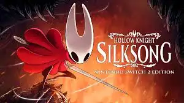
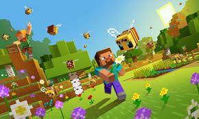
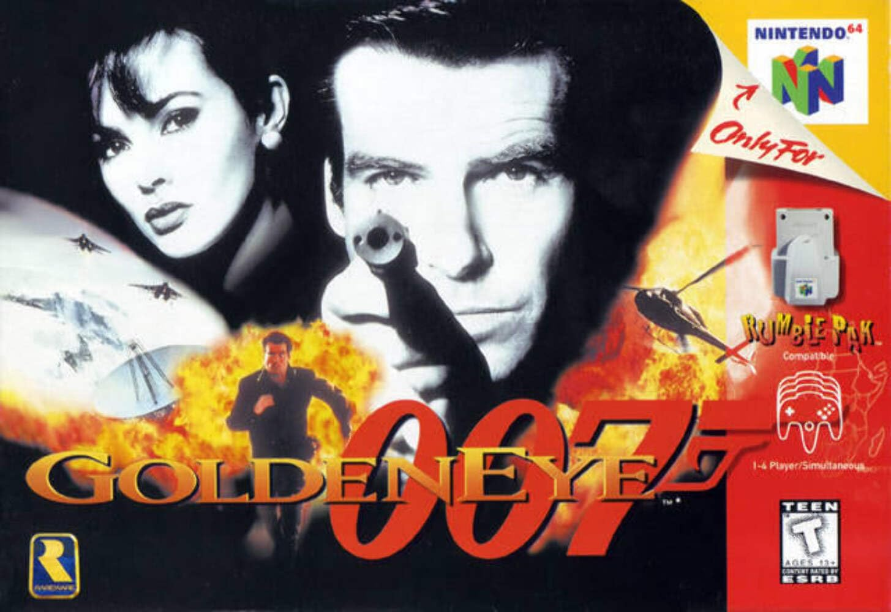

Hollow Knight: Silksong

- Año de salida: 2025
- Desarrolladora: Team Cherry
- Descripción: Secuela de Hollow Knight que pone al jugador en la piel de Hornet, explorando un reino completamente nuevo llamado Pharloom. Mantiene la esencia del metroidvania con exploración vertical y horizontal, combates exigentes y secretos ocultos. Cada enemigo y jefe tiene patrones únicos que requieren estrategia. La historia profundiza en la lucha de Hornet y su relación con los distintos reinos, mientras la banda sonora y el diseño artístico crean un mundo atmosférico y cautivador.
Minecraft

- Año de salida: 2011 (versión completa)
- Desarrolladora: Mojang Studios
- Descripción: Sandbox infinito donde los jugadores pueden construir, explorar y sobrevivir en mundos generados proceduralmente. Permite creatividad total, desde estructuras simples hasta complejos mecanismos con redstone. Incluye enemigos, exploración de cuevas y biomas variados. Su estilo gráfico pixelado es simple, pero su jugabilidad profunda ha generado una comunidad enorme de mods, servidores y contenido personalizado.
007 GoldenEye



- Año de salida: 1997
- Desarrolladora: Rare
- Descripción: Shooter en primera persona basado en la película de James Bond "GoldenEye". Incluye misiones con objetivos variados, sigilo y acción directa. Su modo multijugador local se convirtió en un clásico en Nintendo 64, y cada nivel está diseñado para ofrecer desafíos únicos con inteligencia artificial avanzada para su época.
GTA: San Andreas
- Año de salida: 2004
- Desarrolladora: Rockstar North
- Descripción: Juego de mundo abierto ambientado en el estado ficticio de San Andreas, basado en California y Nevada. Sigues la historia de Carl "CJ" Johnson, quien regresa a Los Santos tras la muerte de su madre. Combina misiones principales y secundarias con libertad total de exploración, conducción, combate y personalización. Destaca por su narrativa envolvente, referencias culturales de los 90 y un mapa lleno de secretos y easter eggs.
Call of Duty (primero)
- Año de salida: 2003
- Desarrolladora: Infinity Ward
- Descripción: Shooter en primera persona ambientado en la Segunda Guerra Mundial. Permite jugar campañas desde distintas perspectivas de soldados aliados, incluyendo estadounidenses, británicos y soviéticos. Destaca por sus gráficos realistas, narrativa cinematográfica y misiones históricas que recrean batallas como Normandía o Stalingrado. Fue pionero en ofrecer experiencias multijugador por LAN, y su inteligencia artificial avanzada proporcionaba un desafío significativo tanto para aliados como enemigos.